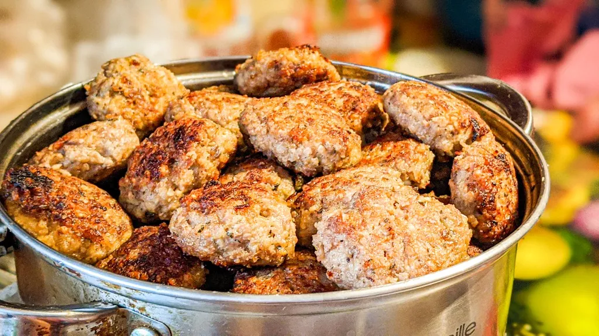

Ukrainian Meatball

Meatball Recipe
If you're here there's a good chance you already indulged in the experience
of crafting and consuming holubtsi. If you haven't tried the holubtsi yet and you're new here
pull up a stool and ready your taste buds, today we're gonna "make-a the meatball." Lets get started...
Meatball Ingredients:
- Flour (rice flour is my favorite for gluten free)
- 2 medium eggs
- salt
- pepper
- olive oil
- 1 diced onion sized to preference
- your choice of a jar/can of tomato based sauce
- 16 ounces of your favorite ground meat
Meatball Meta
- 1.Crack a couple eggs in a mixing bowl.
- 2.Add your ground meat into the mixing bowl.
- 3.Add your diced onion and salt&pepper to the mix.
- 4.Mix well by hand while adding flour incrementally until you can form a meatball that holds together.
- 5.Put the meatballs in a glass baking pan covered in a generous layer of tomato sauce.
- 6.Bake those puppies until they start to get a golden or medium brown crust on the area not covered by sauce.
- 7.Check one with a fork to see that it's cooked through.
- 8.Remove from the oven and serve them up.
- 9.Eat quickly so you can get what's left before anyone else.
- 10.Don't tell my girlfriend I published this recipe.